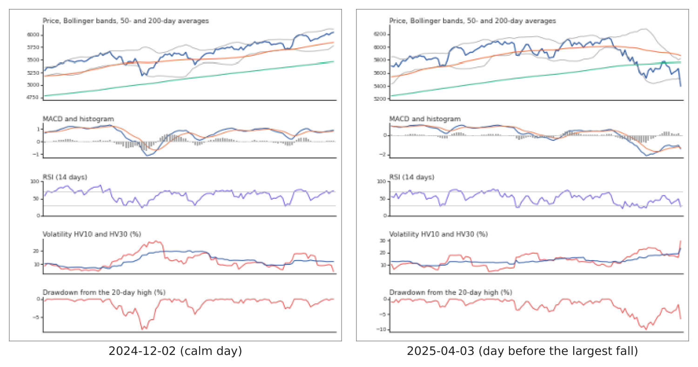
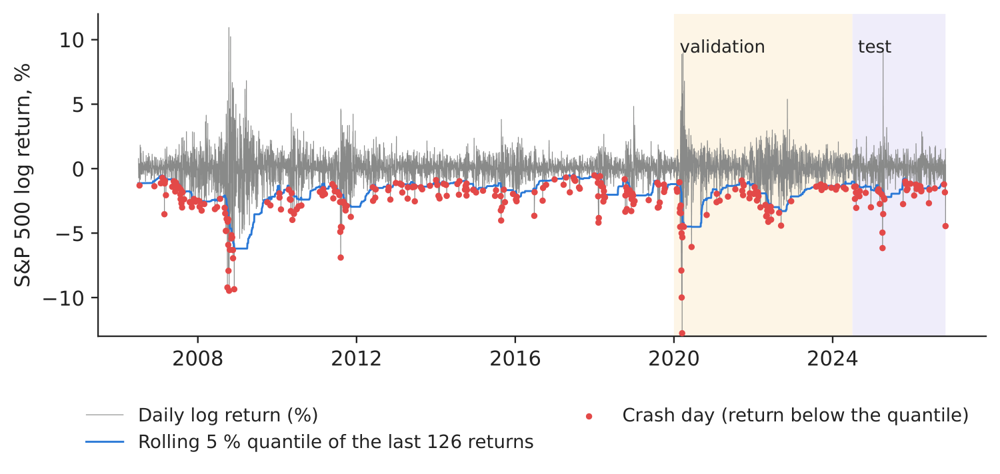
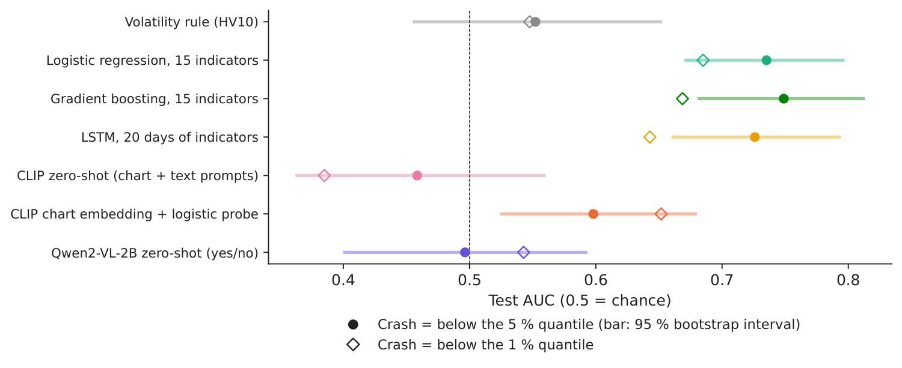
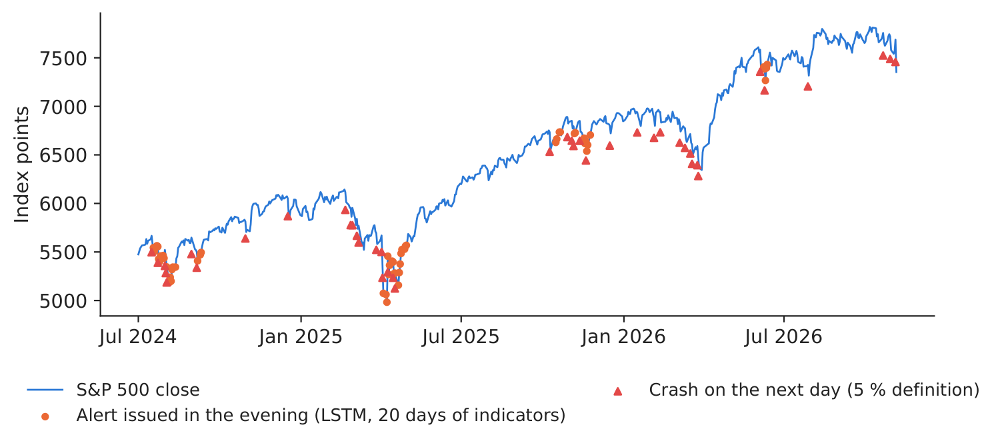

Case study 7 · Lecture 14
Reading market charts with vision-language models
Prof. dr. Daniel Traian PELE
Bucharest University of Economic Studies, Department of Statistics and Econometrics
Romanian Academy, Institute for Economic Forecasting
The paper
Jheng, S.-L., Pele, D. T., Tak, R. & Găman, Ș. (2026). A multimodal vision-language framework for financial anomaly detection. Proceedings of the International Conference on Business Excellence, 20(1), 191–201. doi:10.2478/picbe-2026-0020
Materials
The business question
Every evening, the risk desk of an asset manager looks at the charts of the markets in which it holds positions: price, momentum, volatility, drawdown. An experienced analyst “sees” trouble in a chart before it shows in a single number, but there are hundreds of charts and few analysts. The chief risk officer asks: can a model read the chart like an analyst, flag the days before a sharp fall and say why? And, before buying such a tool: how many alerts per month would the desk have to review, and how many of the bad days would they catch?
The reference paper
Question. Can market regime classification be reframed as a visual recognition task, so that a vision-language model (VLM) detects financial anomalies from charts of market indicators and explains its decision in words (p. 192)? The framework is called FINDER-LLM (FINancial Anomaly DEtection and Recognition using Large Language Models).
Data. Daily open, high, low, close and volume of the S&P 500 (Standard & Poor's 500 index), 1 January 2005 – 30 June 2025; training and calibration to 30 June 2024, the knowledge cutoff of GPT-4.1 (generative pre-trained transformer); strictly out-of-sample test 1 July 2024 – 30 June 2025 (p. 197).
Method. Rolling windows of \(w=126\) trading days (eq. 1); fifteen technical indicators — historical volatility, average true range, MACD (moving average convergence divergence), RSI (relative strength index), Bollinger bands, golden and death crosses, maximum drawdown, Ulcer index, VaR (Value-at-Risk), ES (Expected Shortfall) and on-balance volume (eq. 2–14) — rendered as one multi-panel chart per day; a zero-shot prompt to GPT-4.1 with the chart, a table of indicators, news headlines and price context (p. 196); the model returns a label, an anomaly score, the anomaly type and a written rationale; a second variant uses an embedding of the model's answer (p. 197). A day is a crash day when the future log return falls below the rolling \(\alpha\)-quantile of the previous 126 log returns, \(\alpha\in\{1\,\%, 5\,\%\}\) (eq. 15–16, p. 197).
Main findings of the paper.
- On 12 September 2008, the trading day before the collapse of Lehman Brothers, the framework returned an anomaly score of 0.85, label 1 and the type “regime shift / pre-crash warning”, with a rationale that reads like an analyst's note (Figure 2, p. 198).
- On the test year, the zero-shot prompt reaches ROC AUC (area under the receiver operating characteristic curve) 0.59 at \(\alpha=1\,\%\) and 0.58 at \(\alpha=5\,\%\), the embedding variant 0.66 at \(\alpha=1\,\%\), while the LSTM (Long Short-Term Memory) baseline on the same indicators reaches 0.31 and 0.42 (Table 1, p. 199).
- At \(\alpha=5\,\%\) the prompt identifies 4 of the 20 crash days with 26 false alarms (accuracy 0.83); the authors conclude that LLM-based detection provides interpretable daily risk signals with moderate predictive accuracy and outperforms classical technical indicators (p. 199–200).
The method
Intuition behind the method
A chart compresses fifteen indicators and six months of history into one picture that a trained eye reads in seconds: falling price at the lower Bollinger band, negative momentum, volatility rising, a deepening drawdown. A vision-language model has seen millions of images and texts; it turns the chart into a vector (an embedding) or into an answer in words. We test three ways to use it: compare the chart with text descriptions (zero-shot), learn a simple logistic layer on top of the image vectors (a probe), or ask a question and read the answer.
Label. With closing price \(C_t\) and log return \(r_t=\log(C_t/C_{t-1})\), the future return is \(R_{t,h}=\log(C_{t+h}/C_t)\) (paper eq. 15) and the crash label is \(y_t=\mathbf{1}\{R_{t,h}<q_{\alpha,t}\}\), where \(q_{\alpha,t}\) is the empirical \(\alpha\)-quantile of \(r_{t-125},\dots,r_t\) (eq. 16); we use \(h=1\). Chart. For each day, the image \(I_t\) shows the last \(w=126\) days in five panels: price with Bollinger bands \(\mathrm{SMA}_{20}\pm2\,\mathrm{sd}_{20}\) and the 50- and 200-day averages; MACD \(=\mathrm{EMA}_{12}(C)-\mathrm{EMA}_{26}(C)\) and its histogram (MACD minus its 9-day EMA, exponential moving average); RSI \(=100-100/(1+\overline{G}_{14}/\overline{L}_{14})\), with \(\overline{G}\), \(\overline{L}\) the EMAs of gains and losses; volatility \(\mathrm{HV}_w=\sqrt{252}\,\mathrm{sd}(r_{t-w+1},\dots,r_t)\) for \(w=10,30\); and the drawdown \(C_t/\max(C_{t-19},\dots,C_t)-1\). CLIP (Contrastive Language-Image Pre-training) maps an image to \(\mathbf u_t=f(I_t)\) and a text to \(\mathbf v=g(\text{text})\), both of unit length. The zero-shot score is \(s_t=\mathbf u_t^\top\bar{\mathbf v}_1-\mathbf u_t^\top\bar{\mathbf v}_0\), with \(\bar{\mathbf v}_c\) the mean embedding of three descriptions of a calm (\(c=0\)) or stressed (\(c=1\)) market. The probe is a logistic regression on the 512 standardised image coordinates, \(\Pr(y_t=1\mid I_t)=\sigma(\beta_0+\boldsymbol\beta^\top\mathbf z_t)\), \(\sigma(x)=1/(1+e^{-x})\), fitted with an \(L_2\) penalty whose strength is chosen on the validation period. Qwen2-VL-2B receives the chart and the question “is there a high risk of a sharp fall on the next trading day? Answer yes or no”; its score is \(p_t=P(\text{yes})/(P(\text{yes})+P(\text{no}))\), read from the probabilities of the first answer token. Benchmarks use the 15 indicators as numbers: the volatility rule (\(s_t=\mathrm{HV}_{10,t}\)), a logistic regression, gradient-boosted trees and an LSTM on the last 20 days of indicators (three seeds averaged). Evaluation. \(\mathrm{AUC}=\Pr(s_i>s_j\mid y_i=1,y_j=0)\); an alert is raised when \(s_t\ge\tau\), with \(\tau\) maximising F1 on the validation period; precision \(=TP/(TP+FP)\), recall \(=TP/(TP+FN)\), \(F1=2PR/(P+R)\), balanced accuracy \(=\tfrac12\,[TP/(TP+FN)+TN/(TN+FP)]\), where \(TP\), \(FP\), \(TN\), \(FN\) count true positives, false positives, true negatives and false negatives.
In practice
Treat the model as an alert layer, not as a decision maker: set the threshold on a validation period, give the analyst the chart and the rationale, and measure the alerts against a plain volatility rule before paying for anything more complex.
Replication on the course data
Notebook C7_notebook_EN.ipynb: daily S&P 500 prices and volume (Yahoo Finance), 5,119 trading days with a complete chart and label: training July 2006 – December 2019 (3,398 days), validation January 2020 – June 2024 (1,130), test 01 July 2024 – 05 November 2026 (591 days, 42 crash days at \(\alpha=5\,\%\), 13 at \(\alpha=1\,\%\)).
Classroom implementation: open models that run on a laptop (CLIP ViT-B/16, vision transformer with 16-pixel patches, and Qwen2-VL-2B-Instruct) instead of GPT-4.1, the chart image only (no indicator table, news or price context), next-day horizon \(h=1\), and a test period extended by sixteen months. All charts are drawn from the real prices; the models see them exactly as in Figure 1.

Figure 1. Model input: the five-panel chart of a calm test day (02 December 2024) and of 03 April 2025, the evening before the largest one-day fall of the test period (\(-\)6.16 % on 04 April 2025).
Source: our charts of Yahoo Finance S&P 500 data; the models read the English version.

Figure 2. Daily log returns, the rolling 5 % quantile and the crash days (paper eq. 16).
Source: Yahoo Finance; our labels; shaded: validation and test periods.
Table 1. Out-of-sample performance (01 July 2024 – 05 November 2026), crash = next-day return below the rolling 5 % quantile; last column: 1 % quantile. Best value in bold.
| Model | AUC | 95 % CI | Precision | Recall | F1 | Bal. acc. | AUC, \(\alpha\)=1 % |
|---|---|---|---|---|---|---|---|
| Volatility rule (HV10) | 0.552 | [0.46, 0.65] | 0.231 | 0.071 | 0.109 | 0.527 | 0.548 |
| Logistic regression, 15 indicators | 0.735 | [0.67, 0.80] | 0.138 | 0.524 | 0.218 | 0.636 | 0.685 |
| Gradient boosting, 15 indicators | 0.749 | [0.68, 0.81] | 0.144 | 0.690 | 0.239 | 0.689 | 0.669 |
| LSTM, 20 days of indicators | 0.726 | [0.66, 0.79] | 0.130 | 0.167 | 0.146 | 0.541 | 0.643 |
| CLIP zero-shot (chart + text prompts) | 0.459 | [0.36, 0.56] | 0.129 | 0.095 | 0.110 | 0.523 | 0.385 |
| CLIP chart embedding + logistic probe | 0.598 | [0.53, 0.68] | 0.027 | 0.024 | 0.025 | 0.479 | 0.652 |
| Qwen2-VL-2B zero-shot (yes/no) | 0.496 | [0.40, 0.59] | 0.069 | 0.310 | 0.113 | 0.494 | 0.543 |
Source: our computation; CI = 95 % bootstrap interval (1,000 resamples of test days); alert threshold chosen on the validation period. Paper (GPT-4.1, test July 2024 – June 2025, Table 1): AUC 0.58 (5 %) and 0.59 (1 %) for the zero-shot prompt, 0.42 and 0.31 for the LSTM.
Table 2. Confusion counts on the test period; subscript 5: crash below the 5 % quantile, subscript 1: below the 1 % quantile.
| Model | TP\(_{5}\) | FP\(_{5}\) | TN\(_{5}\) | FN\(_{5}\) | TP\(_{1}\) | FP\(_{1}\) | TN\(_{1}\) | FN\(_{1}\) |
|---|---|---|---|---|---|---|---|---|
| Volatility rule (HV10) | 3 | 10 | 539 | 39 | 0 | 10 | 568 | 13 |
| Logistic regression, 15 indicators | 22 | 138 | 411 | 20 | 3 | 11 | 567 | 10 |
| Gradient boosting, 15 indicators | 29 | 172 | 377 | 13 | 5 | 100 | 478 | 8 |
| LSTM, 20 days of indicators | 7 | 47 | 502 | 35 | 0 | 8 | 570 | 13 |
| CLIP zero-shot (chart + text prompts) | 4 | 27 | 522 | 38 | 1 | 30 | 548 | 12 |
| CLIP chart embedding + logistic probe | 1 | 36 | 513 | 41 | 2 | 70 | 508 | 11 |
| Qwen2-VL-2B zero-shot (yes/no) | 13 | 176 | 373 | 29 | 0 | 50 | 528 | 13 |
Source: our computation; TP, FP, TN, FN = true positives, false positives, true negatives, false negatives. Paper at 5 % (zero-shot prompt): TP 4, FP 26, TN 201, FN 16.
What our data show. On the test period, the models that use the 15 indicators as numbers rank the evenings before a crash best: logistic regression (AUC 0.735), gradient boosting (0.749) and the LSTM (0.726; 0.715–0.730 across the three seeds). Among the chart readers, the logistic probe on the CLIP embeddings is above chance (AUC 0.598, 95 % interval 0.525–0.679): the image vectors do carry information about risk once a simple layer is trained on them. Used zero-shot, without any training on our labels, CLIP (0.459) and Qwen2-VL-2B (0.496, interval 0.401–0.592) are at chance level: small general-purpose models do not know, from text alone, which chart precedes a crash. The plain volatility rule reaches 0.552. The ranking differs from the paper's test year (GPT-4.1 with news and an indicator table: 0.58; LSTM: 0.42); the model, the information given to it and the test period all differ, and with 42 crash days the intervals are wide.

Figure 3. Test AUC of each model, with 95 % bootstrap intervals.
Source: our computation.

Figure 4. Alerts of the model with the best validation AUC and the crash days of the test period.
Source: our computation; Yahoo Finance.
Reading the rationale against the chart. Asked for the paper's structured answer on the evening of 03 April 2025 (right panel of Figure 1), Qwen2-VL-2B returned anomaly score 0.0, label 0, type “No apparent anomaly”, key signals “Price is above the 50-day moving average and the 200-day moving average; MACD is positive and the histogram is above zero; RSI is below 50; Volatility is below 30; Drawdown from the 20-day high is below 5%” and the reasoning: “The technical indicators show that the S&P 500 stock index is not in a state of overbought or oversold, and the volatility is relatively low. The price is above the 50-day moving average and the 200-day moving average, which suggests that the index is likely to continue its upward trend. The MACD is positive and the histogram is above zero, indicating that the index is in an uptrend. The RSI is below 50, which suggests that the index is in an overbought state. The volatility is below 30, which is a normal range for the index. The drawdown from the 20-day high is below 5%, which is a normal range for the index. Therefore, there is no apparent risk of a sharp fall on the next trading day.” The chart says otherwise: MACD \(-\)1.42 % of the price with histogram \(-\)0.12, price \(-\)6.3 % from its 200-day average, HV10 29.8 %, RSI 26 and a drawdown of \(-\)6.6 % from the 20-day high; the next day the index fell \(-\)6.16 %. The model answered “no anomaly” for 6 of the 6 charts we asked about. A rationale is useful only if someone checks it against the chart — the reason the paper extracts structured signals that an analyst can verify.
Decision number. The model with the best validation AUC is the LSTM, 20 days of indicators (validation 0.754, test 0.726). With its validation threshold it raised 54 alerts in the test period, 1.9 per month, and caught 17 % of the crash days and 3 of the 10 largest falls. On alert evenings the next-day return had a standard deviation of 1.79 % against 0.90 % on the other days (mean 0.37 % vs 0.02 %): the alert marks turbulent days, with large moves in both directions, not a forecast of the direction. For the desk this is a manageable review load; a vision-language model can add the written explanation as a second layer, provided the analyst checks it against the chart.
Discussion questions for managers
- A simple volatility rule is on the table next to the vision-language models. What would you need to see before paying for the more complex tool?
- The rationale of the model reads like an analyst's note. How would you check that it describes the chart correctly, and who signs off the alert?
- With 1.9 alerts per month, what does one false alarm cost your desk (analyst time, a hedge), and what does a missed crash cost? Where would you put the threshold?
- The paper adds news headlines and an indicator table to the chart. Which information would you add for your own portfolio, and how would you keep the test free of look-ahead?
- Open models run in-house; a commercial model is accessed over the internet. How do data confidentiality, cost per chart and reproducibility enter your choice?
Limitations of the classroom replication
(i) Our models are small open models (CLIP ViT-B/16 with 150 million parameters, Qwen2-VL with 2 billion), not GPT-4.1, and receive the chart only, without the indicator table, news and price context of the paper's prompt. (ii) The models and thresholds are fitted once (training to December 2019, validation to June 2024) and not re-estimated during the test. (iii) With 42 crash days at 5 % and 13 at 1 % in the test period, the AUC intervals are wide; the 1 % results rest on very few events. (iv) The zero-shot scores depend on the wording of the prompts; we report one fixed wording chosen before the test.
Summary of case 7
- QuestionCan a model read a market chart, flag the evening before a sharp fall and say why?
- DataS&P 500, 2006–2026; five-panel charts of 15 indicators; crash = next-day return below the rolling 5 % quantile.
- MethodCLIP zero-shot and probe, Qwen2-VL-2B; volatility rule, logistic, boosting, LSTM; threshold set on validation.
- ResultTest AUC: numeric indicators 0.749 (boosting), CLIP probe 0.598, zero-shot VLMs at chance (0.496).
- DecisionUse as an alert layer with an analyst in the loop; benchmark against the volatility rule.

Source: our computation on Yahoo Finance S&P 500 data; test period 01 July 2024 – 05 November 2026.
Abbreviations
| AUC | area under the ROC curve, ROC = receiver operating characteristic |
|---|---|
| CI | confidence interval |
| CLIP | Contrastive Language-Image Pre-training |
| EMA | exponential moving average |
| ES | Expected Shortfall |
| FINDER-LLM | FINancial Anomaly DEtection and Recognition using Large Language Models |
| LSTM | Long Short-Term Memory |
| MACD | moving average convergence divergence |
| ROC | receiver operating characteristic |
| RSI | relative strength index |
| VaR | Value-at-Risk |
| VLM | vision-language model |
The text, numbers, charts and tables of this page are those of the case brief; every number is computed by the case notebook on the course data.